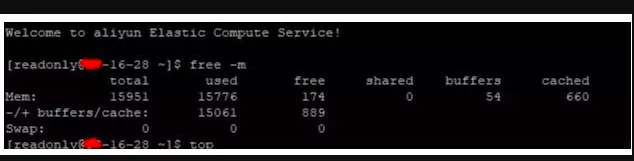
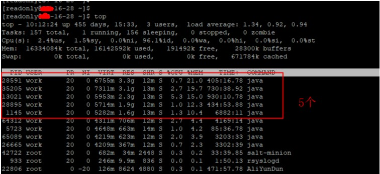
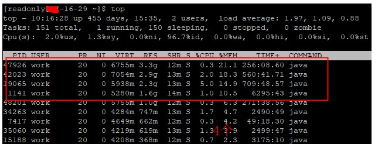
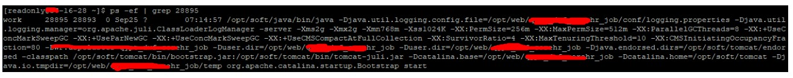
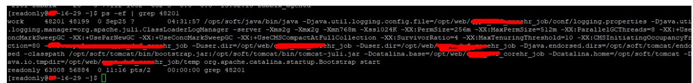
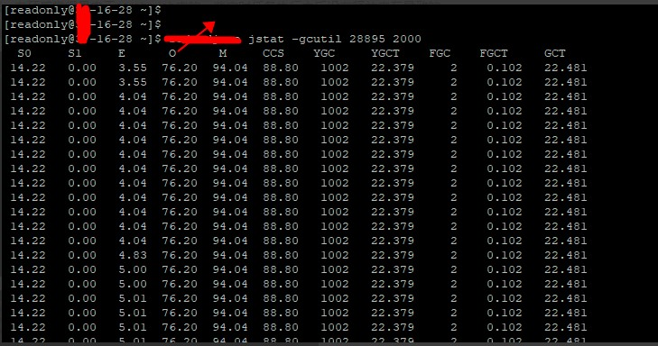
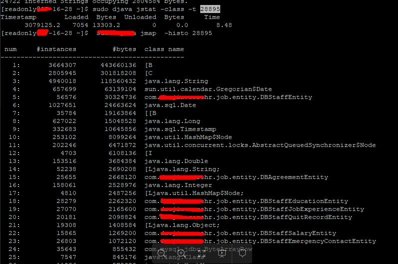
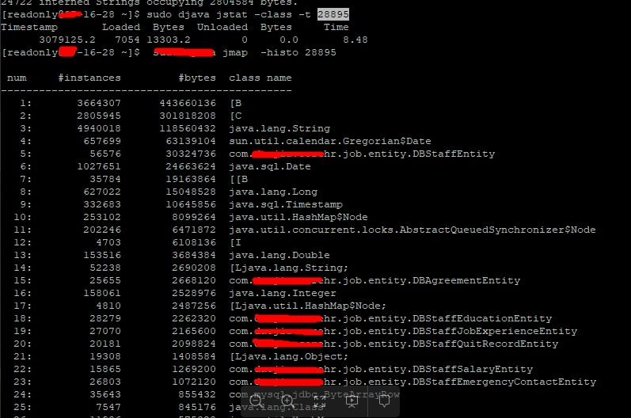
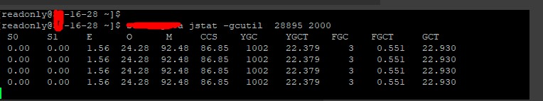
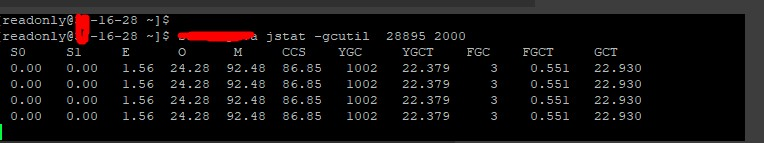

#记一次线上内存报警排查过程
作者：樊春帅（神帅）
创作日期：2019-08-14
专栏地址：【稳定大于一切】
PDF 格式：记一次线上内存报警排查过程
今天风和日丽，刚到公司，看看博客，微信&钉钉消息，，，突然发现报警群里有很多报警说16.28的内存不够，报警信息如下：
告警地址: x.x.16.28 监控取值: 869.46 MB 告警等级: Warning 告警信息: x.x.16.28 内存剩余小于900M 告警时间: 2019.10.31-09:50:23 持续时间:1h 0m
开始时间大概是从昨天晚上11点多开始的，而且持续到今天上午10点多，事出有因必有妖，下面看一下排查思路和排查过程。
####1.查一下16.28的内存使用情况 
####2.排查最近是否有新上线服务，导致内存紧张 rpcservice list, ps -ef | tomcat 两个命令发现业务服务有7个，进程存活时间较长，不太可能，同时根据另一台16.29机器的服务部署情况也验证了没有新上线服务。 ####3.排查是否有java服务在持续FGC 使用top命令查一下，发现9个java服务，7个业务服务，2个日志进程服务。使用 jstat -gcutil pid 2000命令一一排查，发现GC情况正常，没有服务有持续的YGC，FGC情况存在。 ####4.排查异常占用内存的java服务 由于有7个业务服务，直觉告诉我dwf服务应该比rpc服务占用的内存少 这一步走错了两个方向
- 以为web服务占用内存较大，比RPC服务还高，但是发现不是
- 以为其中一个日志进程服务（flume）占用内存较大，发现另一台16.29 的日志进程服务占用的内存跟出问题的这一台机器是一样的 两步走错，浪费了一些时间~~~~ ####5.top命令对比16.28/16.29两台服务器 发现其中肯定有同一个java进程占用的内存比另一个java进程占用的内存高。
看下面的图：   ####6.排查内存占用 由于之前排查过程中跟踪过出问题的这一台的服务情况，但是肉眼没有看出来，通过内存占用对比（top命令 ，然后shift +M）对比占用内存最高的几个进程，现在很明显两台机器中有一个服务肯定有问题。
####7.通过对比可以发现有个服务是有问题的


####8.结合之前已经截图的现场可以发现
16.28的corehr_job服务占用内存是12.3%，16.29的corehr_job服务占用内存是6.3%,很明显的，到这里我们已经揪出有问题的服务了。下面继续追查为啥不一样，先透个底，有预感觉得是由于corehr_job中的一些定时任务执行之后没有释放内存导致的。看一下这个服务的堆内存占用内存比例大小，如下图：

 ####9.现在要看看这两个机器的同一个服务堆内存到底有什么对象

####9.现在要看看这两个机器的同一个服务堆内存到底有什么对象

 很明显我们可以看到16.28中的这个有问题的服务堆内存占用的对象比另一个正常的多，由于很小心的保留了现场我们可以分析一下，为啥有占用呢？
由于老年代占用76%，没有达到FGC的阈值，导致大量对象在年轻代,老年代驻留，下面尝试一下触发FGC，
####10.使用命令触发FGC
sudo djava jmap -histo:live 28895 执行这个命令可能引发一次FGC，然后释放内存，执行完之后确实触发了一次FGC。

####11.再次进行top (shift+m)
发现内存占用依然没有解决，也就是说虽然触发了FGC，但是应用程序已经申请的内存是不会释放的，笑哭~~~~
很明显我们可以看到16.28中的这个有问题的服务堆内存占用的对象比另一个正常的多，由于很小心的保留了现场我们可以分析一下，为啥有占用呢？
由于老年代占用76%，没有达到FGC的阈值，导致大量对象在年轻代,老年代驻留，下面尝试一下触发FGC，
####10.使用命令触发FGC
sudo djava jmap -histo:live 28895 执行这个命令可能引发一次FGC，然后释放内存，执行完之后确实触发了一次FGC。

####11.再次进行top (shift+m)
发现内存占用依然没有解决，也就是说虽然触发了FGC，但是应用程序已经申请的内存是不会释放的，笑哭~~~~

分析到此结束，根据现场保留，排查数据和线索可以有以下应对方案和措施：
1.已知引起原因，目前已重启该问题服务，内存紧张报警解除 2.提工单进行服务器升配（不止升级有问题的这一台，还有另一台），机智~~~ 3.排查获取大数据量的job，增加对象回收的逻辑比如用完之后clear(),设置为null之类的
这里引申两个问题：
- java 应用程序申请的内存触发FGC之后会返回给操作系统吗？
- 使用CMS垃圾回收算法的情况下触发FGC的条件是什么？
- 有什么方法可以让应用触发FGC之后将内存归还给操作系统？
此外，根据涯海的总结我们可以得出出现此类问题的一些原因
针对这个案例，一个长时间运行的 Java 程序，如果在没有变更的情况下出现系统内存不足。 通常可以分为以下几种情况：
- 如果是突然不足，一般是请求了一个超大的对象（数组）;
- 预期外的持续流量脉冲;
- 如果是内存余量缓慢减少，通过是内存泄漏（大量引用对象未释放），可以重点检查下数据库连接/文件资源/本地缓存等资源的释放情况。
参考：https://www.cnblogs.com/seifon/p/11228224.html